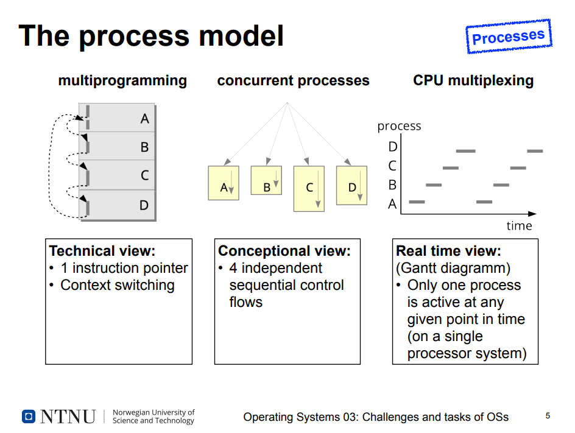
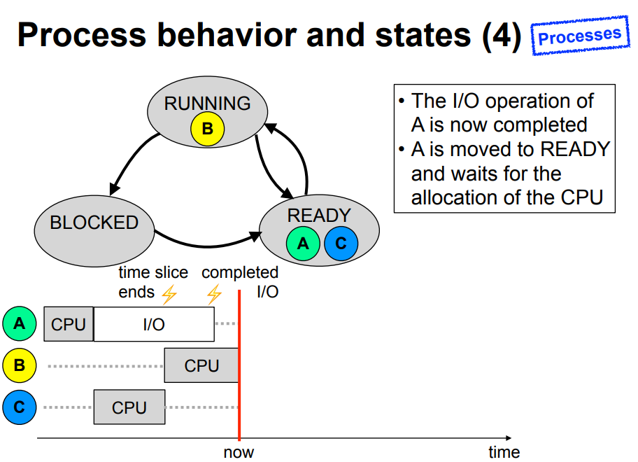

lecture.3
Lecture 3: Challenges and tasks of an OS
Exam
Discussion about abstractions provided by an OS and the related tasks an OS has to perform as well as the resulting problems and challenges
Important questions:
- Which abstractions does a modern OS provide?
- CPUs, processes, memory, file systems, security, …
- What is a process?
- How do processes interact with each other and the OS?
- Synchronization and deadlock fundamentals
- What different view of processes exists and why?
- Which states can a process have and what characterizes the different states?
- How do processes interact with each other and the OS?
Different views of an operating systems
- Abstractions
- Processes, virtual memory, file systems
- Tasks
- CPU scheduling, synchronization
- Inter-process communication
- Memory management
- Problems
- Deadlocks
- System security
- Challenges
- Multiprocessor systems
- Cloud computing and virtualization
A process.. (1)
- Horning/Randell, Process Structuring
- A process is a triple , where is a state space, is an action function in that space, and is the subset of which defines the initial states of the process. A process generates all the computations generated by its action function from its initial states.
- Dennis/van Horn, Programming Semantics for Multiprogrammed Computations
- A process is a locus of control within an instruction sequence. That is, a process is that abstract entity which moves through the instructions of a procedure as the procedure is executed by a processor.
- Habermann, Introduction to Operating System Design
- A process is controlled by a program and requires a processor to execute that program.
A process.. (2)
- ..is a program in execution
- This requires a process context which constists of..
- Memory: code, data, and stack segment (text, data, bss, stack, heap)
- Contents on processor registers
- Instruction pointer
- Stack pointer
- General purpose registers
- Process state
- User ID
- Access permissions
- Currently used resources
- Files, I/O devices, etc.
The process model

Process behavior and states
- Process states:
- RUNNING - Process is currently being executed
- READY - Process is ready to run and waits for the CPU
- BLOCKED - Process waits for the completion of an I/O operation

CPU scheduling
A single scheduling algorithm is characterized by the order of processes in the queue and the conditions under which the processes are added to the queue.
- Scheduling enables the coordination of concurrent processes
- Basic questions:
- Which sort of events can cause preemption?
- In which order should processes be executed?
- Objectives of a scheduling algorithm
- user oriented -> short reaction times
- system oriented -> optimal CPU utilization
- No single scheduling algorithm can fulfull all requirements!
Process synchronization
- Example: non coordinated access to printer.
- We don't want two print jobs to interleave
- Reason for the problem: critical sections
- Solution approach: mutual exclusion
- Using the mutex abstraction
- If one of the processes A or B is in between the calls to lock and unlock, the other cannot pass the lock and blocks at the lock until the critical section is left by the other process calling unlock.
Deadlocks
- Traffic rule: "Left yields to right"
- No car is allowed to proceed
- Deadlocks like this can also occur with processes
Inter-process communication (IPC)
- Enables the collabortaion of multiple processes
- Local, e.g. printing daemon, X window server
- Remote, e.g. web server, database server, ftp server
- Client/server systems
- Abstractions/programming models
- Shared memory
- multiple processes can use the same memory area at the same time
- additional synchronisation is requied
- Message passing
- copy semantics: recipient receives a copy of the message
- can be synchronous or asynchronous
- Shared memory
The memory hierarchy
Memory management
- Address mapping
- Logical addresses to physical addresses
- Enables relocation of code and data
- Placement strategy
- In which gap should memory for a process be reserved?
- Can we compact the memory?
- How to minimize fragmentation?
- Replacement strategy
- Which memory area can be swapped out?
Background storage
- File systems enable permanent storage of large amounts of data
- The operating system provides a logical view to applications and has to implement this efficiently
Access matrix
- Elements of the matrix
- Subjects (persons/users, processes)
- Objects (data, devices, processes, memory)
- Operations (read, write, delete, execute)
- Question: Is
operation(subject, object)permitted?
Basic model: file/process attributes
- Properties related to a user:
- for which user is the process being executed?
- which user is the owner of a file?
- which permissions does the owner of a file give to him/herself and which permissions to other users?
- Permissions of a process when accessing a file
- Attributes of processes: user ID
- Attributes of files: owner ID
Unix access permissions
- Unix: simple access control lists
- Processes have a user ID and a group ID
- Files have an owner and a group
- Permissions are related to the user (owner), group and all others
NUMA architectures (non uniform memory architecture)
- The CPUs (which can have multiple cores each) communicate via HyperTransport
- Global address space: memory connected to a different CPU can be accessed, but the latency is higher
- Approach enables better scalability, since parallel memory accesses are possible
CPU allocation for multiprocessors
- Two options
- A single common READY list
- One READY list per CPU
Cloud computing
- According to the US National Institute of Standards and Technology, a Cloud has five properties:
- "Self service" on demand
- High throughput network access
- Resource pool
- Fast adaptivity
- Measurable service
Hardware virtualization
- Enables the creation of multiple virtual machines on one physical computer. Each virtual machine can have its own OS. Important foundation technology for Cloud computing and server consolidation
- Technical basis: hypervisor / virtual machine monitor
Conclusion: the OS..
- administers resources, especially the CPU(s) and memory
- provides abstractions, e.g.
- the process concept
- files and directories
- permission concept
- is optimized for the specific application profile
- it is impossible to satisfy the requirements of all applications to 100%. We can approach this goal using virtualization.
- Operating systems, typical applications and the hardware have evolved together during the last few decades. The system abstractions available today are the result of an evolution which is still ongoing.